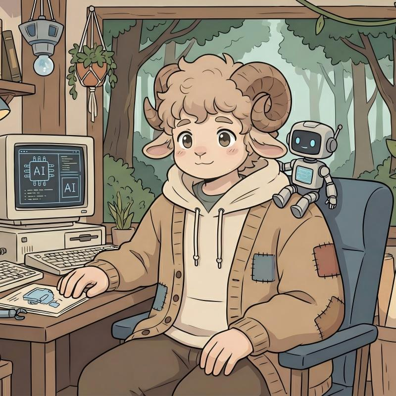
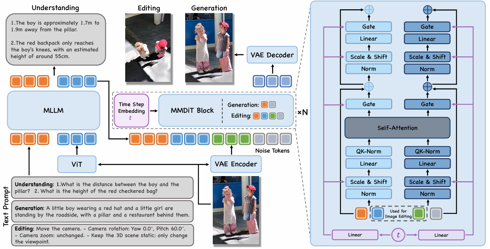

WEIYANG JIN
PhD Student of IDS (MMLab)
University of Hong Kong
Hong Kong SAR, China
University of Hong Kong
Hong Kong SAR, China
Email: wayneyjin@gmail.com

Biography
I am a Ph.D. student at MMLab, University of Hong Kong, starting from November 2025, supervised by Prof. Xihui Liu. I am also fortunate to be collaborating with Prof. Saining Xie. My research interests lie in machine learning, with a particular focus on how to build visual intelligence via representation and self-evolution.
News
- 2025/10 Will join HKU-MMLab and start my PhD career.
Selected Projects
(*: Equal Contribution, †: Project Leader)
Foundation Models 2

Generative Models 3


Tech Report 3


World Model TBD
Stay tuned — exciting work on world models is on the way.
Experience
-
Shanghai Artificial Intelligence Laboratory, Intern Robotics Research Intern with Dr. Yilun ChenMay 2025 - Aug 2025
-
New York University, Vision-X Lab Research Intern with Prof. Saining XieFeb 2024 - May 2025
-
Westlake University, CAIRI Lab Research Intern with Prof. Stan Z. Li, IEEE FellowApr 2023 - Feb 2024
-
Tsinghua University, AIR Research Intern with Prof. Hao ZhaoMay 2022 - Apr 2023
Community Contribution
-
SOTA-Seminar, Founder An academic exchange community driven by interest, dedicated to communication in different fields and holding academic seminars regularly.
-
Lumina, Core-Member The largest embodied intelligence open-source community in China, dedicated to a more open and comprehensive embodied intelligence culture.